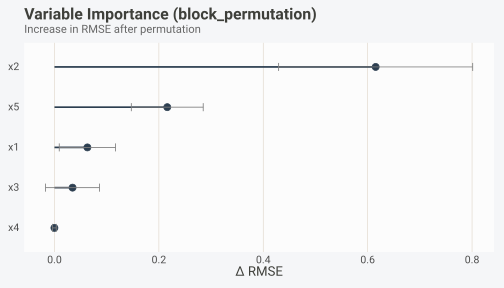
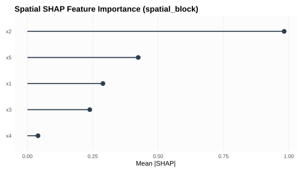
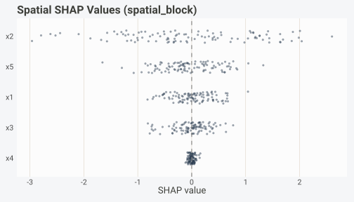
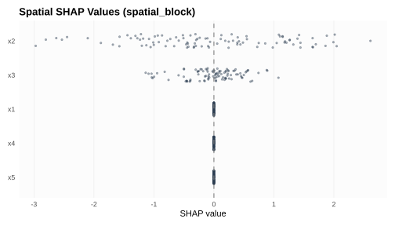

Feature Selection with Blocked Cross-Validation
Gilles Colling
2026-10-10
Source:vignettes/feature-selection.Rmd
feature-selection.RmdInstallation
install.packages("pak") # development version
pak::pak("gcol33/BORG")Introduction
Feature selection is a standard step in predictive modeling. Remove irrelevant predictors and the model becomes simpler, faster to fit, and easier to interpret. In most textbook treatments the procedure is straightforward: wrap your selection criterion inside cross-validation, pick the subset that maximizes held-out performance, and move on. The problem is that textbook cross-validation assumes independence between observations. Spatial, temporal, and grouped data violate that assumption, and the consequences for feature selection are worse than you might expect.
When observations are autocorrelated, random CV allows nearby points to leak information between training and test folds. This inflates the apparent performance of every candidate model. But the inflation is not uniform across variables: features that happen to correlate with the spatial or temporal structure of the data receive a disproportionate boost. The result is that random CV selects variables that track spatial pattern rather than the true signal-to-noise relationship. A model built on those variables will look excellent in cross-validation and fail on genuinely new locations or time periods.
BORG addresses this by routing every evaluation through blocked CV. When coordinates, time indices, or group labels are present, the package generates folds that separate dependent observations into distinct blocks. Feature selection then operates on performance estimates that reflect true generalization capacity rather than within-block interpolation. This vignette covers the full suite of feature-level tools: block-permutation importance for post-hoc variable ranking, forward feature selection for building parsimonious models, best subset selection for exhaustive search when the number of candidates is small, and spatial SHAP values for observation-level attribution.
The distinction between “spatially aware” and “standard” feature selection is not a minor technical footnote. Published benchmarks (Roberts et al., 2017; Meyer and Pebesma, 2021) show that random CV can inflate apparent R-squared by 0.1 to 0.4 units on spatially autocorrelated datasets. When feature selection is embedded inside that inflated evaluation loop, the selected variables encode the inflation rather than the signal. The downstream model inherits those bad choices and fails silently in deployment, producing predictions that look correct on paper but miss the mark on genuinely new locations.
All examples use synthetic data generated with
borg_simulate(), where the true data-generating process is
known. This lets us verify that each method recovers the correct signal
variables and rejects noise.
Simulated data
Throughout this vignette we use a single spatial dataset with five predictors, a spatially autocorrelated response, and known ground truth. The simulation places 300 observations on a two-dimensional grid with moderate spatial autocorrelation (rho = 0.5) and a signal-to-noise ratio of 0.3.
sim <- borg_simulate(
n = 300,
type = "spatial",
n_predictors = 5,
signal_strength = 0.3,
autocorrelation = 0.5,
seed = 42
)
d <- sim$dataThe spatial simulation creates coordinate columns x and
y, predictors x1 through x5, and
a response column. Because R’s data.frame() renames the
response y to y.1 to avoid colliding with the
coordinate column y, we refer to the target as
"y.1" in all subsequent code.
names(d)
#> [1] "x" "y" "x1" "x2" "x3" "x4" "x5" "y.1"
cat("True R-squared:", round(sim$true_r2, 4), "\n")
#> True R-squared: 0.3
cat("Observations:", nrow(d), "\n")
#> Observations: 300We also generate blocked CV folds up front. These folds will be reused across multiple feature selection methods, keeping comparisons consistent.
Block-permutation importance
The problem with standard permutation importance
Standard permutation importance (Breiman, 2001) measures a variable’s contribution by shuffling its values across all observations and recording the increase in prediction error. The logic is sound for independent data: shuffling breaks the association between the variable and the response, and the resulting performance drop measures how much the model relies on that variable.
With autocorrelated data, row-level shuffling does something subtler and more damaging. When you permute a spatially structured variable by randomly reassigning values across all locations, you destroy both the variable-to-response association and the spatial structure of the variable itself. The permuted variable no longer resembles any realistic spatial field. This creates an artificially large contrast between the original (spatially smooth) and permuted (spatially random) versions, inflating importance for any variable that has spatial structure, regardless of whether that structure carries predictive information. Noise variables that happen to be spatially autocorrelated will appear important; truly predictive variables that lack spatial pattern will be undervalued.
How block-permutation importance works
Block-permutation importance (Bieganek et al., 2024; see also the approach used in the CAST package) solves this by permuting values across spatial blocks rather than across individual rows. BORG’s implementation works as follows:
- Partition observations into spatial blocks using k-means clustering on coordinates.
- For each candidate variable, shuffle the block assignments rather than individual values. Each observation receives the variable value from the corresponding position in a different block.
- Predict with the modified dataset and record the change in error.
- Repeat the permutation multiple times to estimate variability.
The block permutation preserves within-block spatial structure while breaking between-block associations. This gives a cleaner estimate of whether a variable carries predictive information beyond its spatial pattern.
The n_blocks parameter controls the granularity of the
permutation. More blocks produce finer-grained permutations that are
closer to row-level shuffling; fewer blocks preserve more of the
original spatial structure. The default of 10 is a reasonable starting
point for most datasets. If the study area is large with distinct
environmental zones, increase n_blocks to 15 or 20. If the
area is small or the autocorrelation range is long relative to the study
extent, reduce n_blocks to 5. The n_rep
parameter controls how many times the permutation is repeated for each
variable; more repeats produce more stable importance estimates at the
cost of additional computation. Ten repeats is usually sufficient for a
rough ranking; increase to 25 or 50 if you need precise standard errors
on the importance values.
Worked example
We first fit a simple linear model using all five predictors, then compute block-permutation importance.
model <- lm(y.1 ~ x1 + x2 + x3 + x4 + x5, data = d)
imp <- borg_importance(
model = model,
data = d,
target = "y.1",
coords = c("x", "y"),
n_blocks = 10,
n_rep = 10,
metric = "rmse",
seed = 42
)
imp
#> BORG Variable Importance (block_permutation, rmse)
#>
#> variable importance importance_sd rank
#> x2 0.615293285 0.185900003 1
#> x5 0.216083654 0.068867403 2
#> x1 0.063039250 0.053899265 3
#> x3 0.034601511 0.051724985 4
#> x4 -0.000138957 0.003494685 5What you get back is a data frame with columns variable,
importance (mean increase in RMSE after permutation),
importance_sd (standard deviation across repeats), and
rank. Variables with higher importance contribute more to
the model’s predictions after accounting for spatial structure.
autoplot(imp)
The lollipop plot shows each variable’s importance with error bars
indicating variability across permutation repeats. Variables whose error
bars cross zero contribute negligibly. The max_vars
argument controls how many variables are shown (default 20), which
matters when working with high-dimensional data.
Comparing block vs. row permutation
To see the difference that blocking makes, we can run the same analysis without coordinates, which falls back to standard row permutation.
imp_row <- borg_importance(
model = model,
data = d,
target = "y.1",
coords = NULL,
n_rep = 10,
metric = "rmse",
seed = 42
)
cat("Block-permutation ranking:", paste(imp$variable, collapse = " > "), "\n")
#> Block-permutation ranking: x2 > x5 > x1 > x3 > x4
cat("Row-permutation ranking: ", paste(imp_row$variable, collapse = " > "), "\n")
#> Row-permutation ranking: x2 > x5 > x1 > x3 > x4 > x > yWith autocorrelated data, the two rankings will often disagree. Row permutation tends to inflate the importance of variables whose values are spatially smooth, because replacing a smooth surface with random noise creates a larger contrast than replacing a rough surface. Block permutation avoids this bias by keeping the within-block spatial texture intact. The block-permutation ranking is the one you should trust for decisions about which variables to retain.
Forward feature selection
Why greedy search with blocked CV
Forward feature selection (FFS) builds a model incrementally:
starting from zero variables, it evaluates every candidate addition,
picks the one that most improves the CV metric, and repeats until no
further improvement is possible. This greedy strategy avoids the
combinatorial explosion of exhaustive search while producing a
parsimonious model. It is the same strategy used by the CAST package’s
ffs() function, which introduced the idea of coupling
forward selection with spatial CV to the ecological modeling community
(Meyer et al., 2018).
The critical difference between BORG’s implementation and standard stepwise selection is the evaluation backbone. Each candidate model is scored using blocked cross-validation, not random CV or in-sample criteria like AIC. This means the selection procedure penalizes variables that exploit spatial leakage, not just variables that fail to reduce residual variance.
borg_forward_selection() accepts a pre-built fold object
from borg_cv(), a custom fitting function, and a metric to
optimize. It stops adding variables when the CV metric no longer
improves, or when all candidates have been added.
Step-by-step example
ffs <- borg_forward_selection(
data = d,
target = "y.1",
predictors = c("x1", "x2", "x3", "x4", "x5"),
folds = folds,
metric = "rmse",
fit_fun = stats::lm,
verbose = FALSE
)
ffs
#> BORG Forward Feature Selection
#> Selected: x2 + x3
#> Best RMSE: 1.7033
#> 2 of 5 variables selectedThis returns an object of class borg_ffs containing:
-
selected: the variables chosen, in the order they were added. -
history: a data frame recording each step’s metric value and which variable was added. -
best_metric: the best CV metric achieved by the final selected set. -
all_vars: all candidate variables that were considered.
ffs$history
#> step variable_added metric_value n_vars
#> x2 1 x2 1.735190 1
#> x3 2 x3 1.703338 2The history table shows how the RMSE changed as variables were added. Each row records the step number, the variable added at that step, the mean CV RMSE, and the total number of variables in the model. The selection stops when adding another variable fails to improve the metric, preventing overfitting to noise variables.
Using a custom model
The fit_fun argument accepts any function with the
signature function(formula, data) that returns an object
supporting predict(). This makes FFS compatible with any
modeling framework that follows R’s standard formula interface.
# ranger's predict() uses `data` not `newdata`, and returns a list.
# Wrap it so that stats::predict(object, newdata = ...) returns a vector.
ranger_fit <- function(formula, data) {
fit <- ranger::ranger(formula, data = data, num.trees = 200)
training_data <- data # needed for predict method
structure(
list(fit = fit, training_data = training_data),
class = "ranger_lm_compat"
)
}
# Register the S3 method so stats::predict() dispatches correctly
predict.ranger_lm_compat <- function(object, newdata = NULL, ...) {
if (is.null(newdata)) newdata <- object$training_data
ranger::predictions(stats::predict(object$fit, data = newdata))
}
registerS3method("predict", "ranger_lm_compat", predict.ranger_lm_compat)
ffs_rf <- borg_forward_selection(
data = d,
target = "y.1",
predictors = c("x1", "x2", "x3", "x4", "x5"),
folds = folds,
metric = "rmse",
fit_fun = ranger_fit,
verbose = FALSE
)
cat("RF selected:", paste(ffs_rf$selected, collapse = " + "), "\n")
#> RF selected: x2 + x5 + x3
cat("RF best RMSE:", round(ffs_rf$best_metric, 4), "\n")
#> RF best RMSE: 1.7441Different model classes will select different variable subsets because linear models and tree-based models interact differently with spatial structure. Run FFS with the model class you intend to deploy whenever computational cost allows it.
Interpreting the selection path
The selection history reveals how much each additional variable contributes to out-of-block predictive accuracy. A steeply declining RMSE in the first few steps, followed by flat or increasing RMSE, suggests that only the first few variables carry real information and the rest add noise. If RMSE declines gradually through all steps, most variables are contributing and parsimony may not be appropriate.
Watch for cases where FFS selects a variable that block-permutation importance ranked low. This happens when a variable’s marginal contribution (what FFS measures) differs from its importance conditional on all other variables (what permutation importance measures). FFS asks “does this variable help when added to what we already have?” while permutation importance asks “does this variable matter in the full model?” The two questions have different answers whenever collinearity is present.
Another pattern to watch for is the “diminishing returns” profile, where the first variable produces a large improvement but each subsequent variable adds only a tiny increment. This profile is common in spatial data where a single environmental gradient dominates the response and the remaining variables represent secondary gradients or noise. In these situations, a model with one or two variables may be both more parsimonious and more transferable than a model with all five. The blocked CV metric makes this judgment call transparent: if adding the third variable improves the RMSE by 0.001, that improvement is probably within the noise margin and the simpler model is preferable.
Best subset selection
When the number of candidate predictors is small (15 or fewer),
exhaustive evaluation of all possible subsets is feasible.
borg_best_subset() evaluates every combination from size 1
to size p using blocked cross-validation and returns the results ranked
by metric.
bss <- borg_best_subset(
data = d,
target = "y.1",
predictors = c("x1", "x2", "x3", "x4", "x5"),
folds = folds,
metric = "rmse",
verbose = FALSE
)
bss
#> BORG Best Subset Selection
#> Best: x2 + x4 + x5
#> RMSE = 1.6989
#> 31 subsets evaluatedEach row in the output corresponds to one evaluated subset,
containing the variable combination (as a +-separated
string), the number of variables, the mean CV metric, and the rank. The
top row is the best subset.
head(bss, 10)
#> BORG Best Subset Selection
#> Best: x2 + x4 + x5
#> RMSE = 1.6989
#> 10 subsets evaluatedBest subset selection is the gold standard for variable selection because it guarantees finding the globally optimal combination, not just a greedy approximation. However, it evaluates 2^p - 1 models (31 for p = 5, 32767 for p = 15), each requiring a full round of blocked CV. The function enforces a hard limit of 15 predictors to prevent accidental combinatorial explosions.
For problems with more than 15 candidate variables, use forward selection as the primary method and permutation importance as a filter to pre-screen candidates down to a manageable set before running best subset on the survivors.
The max_vars argument limits the maximum subset size,
which can reduce computation when you know that smaller models are
preferred. Setting max_vars = 3 evaluates only single,
pair, and triple combinations.
One advantage of best subset over forward selection is that it can detect complementary variable pairs that are individually weak but strong together. FFS would never pick the first member of such a pair because its marginal contribution at step 1 is small. Best subset evaluates the pair directly and can find it. This matters in ecological modeling where interaction effects between environmental gradients are common: elevation alone may not predict species occurrence, and precipitation alone may not either, but the combination of both captures an environmental niche that neither captures individually.
SHAP values
Beyond global importance
Permutation importance and forward selection answer global questions: which variables matter across the entire dataset? SHAP (SHapley Additive exPlanations) values answer a local question: for a specific observation, how much did each variable contribute to the prediction?
This distinction matters for spatial data because a variable’s contribution can vary across space. Temperature might be the dominant predictor in mountain regions but irrelevant in lowland areas. Global importance averages over these spatial differences; SHAP values preserve them.
Spatial SHAP
Standard SHAP implementations approximate Shapley values by marginalizing over background data points sampled uniformly from the dataset. For spatial data this creates impossible feature combinations: a mountain observation might be paired with lowland covariate values that never co-occur in reality, biasing the contribution estimates.
BORG’s borg_shap() addresses this by using
block-conditional marginal expectations. Instead of sampling background
points from the full dataset, it partitions observations into spatial
blocks and samples only from blocks that are spatially separated from
the observation being explained. This preserves realistic covariate
relationships within each block while still breaking the association
between the focal variable and the response.
The algorithm proceeds as follows for each observation and each feature:
- Identify the spatial block containing the observation.
- Sample background points from other blocks.
- Replace the focal feature’s value with background values while keeping all other features fixed.
- Compute the difference between the original prediction and the mean prediction with the replaced feature.
This approximation converges to the true Shapley value as the number of blocks and background samples increases, while respecting spatial structure throughout.
Worked example
shap <- borg_shap(
model = model,
data = d,
target = "y.1",
coords = c("x", "y"),
n_blocks = 10,
n_samples = 50,
explain_idx = 1:100,
seed = 42
)
shap
#> BORG Spatial SHAP Values
#> ========================
#>
#> Method: spatial_block (10 blocks, 50 bg samples)
#> Explained: 100 observations
#> Baseline (E[f(x)]): -1.2790
#>
#> Feature importance (mean |SHAP|):
#> x2 0.9822 #########################
#> x5 0.4239 ###########
#> x1 0.2889 #######
#> x3 0.2387 ######
#> x4 0.0407 #borg_shap() returns a matrix of SHAP values (one row per
explained observation, one column per predictor), the baseline
prediction (the model’s mean prediction), and a feature importance
ranking based on mean absolute SHAP.
autoplot(shap, type = "importance")
The importance plot orders variables by their mean absolute SHAP contribution. This should broadly agree with block-permutation importance, but small differences are expected because the two methods use different estimation strategies.
autoplot(shap, type = "beeswarm")
The beeswarm plot shows the distribution of SHAP values for each variable across all explained observations. Each point is one observation. Variables with wide distributions have heterogeneous effects across space; variables with tight distributions have consistent effects everywhere. Points far from zero indicate observations where the variable strongly influences the prediction in either direction.
When to use SHAP vs. permutation importance
Use permutation importance when you need a quick global ranking of
variables for feature selection decisions. Use SHAP values when you need
observation-level attribution, spatial maps of variable contributions,
or when you want to understand how a model’s behavior varies across your
study area. SHAP is computationally more expensive (it requires one
prediction per background sample per variable per explained
observation), so the explain_idx argument lets you select a
representative subset of observations rather than explaining the entire
dataset.
A practical strategy is to explain a spatially stratified subsample rather than a random subsample. If your study area contains distinct regions (e.g., different biomes, land cover types, or climate zones), sample observations from each region to ensure the SHAP analysis covers the full environmental gradient. Random subsampling can oversample dense regions and miss sparse but important ones.
The n_blocks and n_samples parameters
control the precision of the SHAP approximation. More blocks produce
more fine-grained spatial conditioning; more background samples produce
smoother marginal expectations. For a quick exploratory analysis, 10
blocks and 30 background samples are sufficient. For publication-quality
results, increase to 15 blocks and 100 samples, and verify that the
SHAP-based importance ranking is stable across different random
seeds.
Comparing methods
The four feature-level tools in BORG answer overlapping but distinct questions. Choosing the right one depends on your goal, the number of candidate variables, and the computational budget available.
Block-permutation importance measures each variable’s contribution to the full model. It is the fastest method: only n_rep x p prediction rounds on the full dataset, with no CV loop. Use it for post-hoc interpretation or as a pre-screening filter before running more expensive selection methods. The main limitation is that it evaluates variables in the context of the complete model, so collinear variables may split importance in unpredictable ways.
Forward feature selection builds a model from scratch, adding variables greedily at a total cost of O(p^2 x k) model fits where k is the number of folds. This is the workhorse for building parsimonious models when exhaustive search is infeasible, though the greedy selection order may not produce the globally optimal combination.
Best subset selection evaluates all 2^p - 1 combinations with full blocked CV at a cost of O(2^p x k) model fits. For small candidate sets (p <= 15), this guarantees finding the optimal combination. Beyond that, it is computationally prohibitive.
Spatial SHAP provides observation-level attribution rather than global variable ranking. Total cost: O(n_explain x p x n_samples) predictions. SHAP is not a selection method per se, but it can inform selection by revealing whether a variable’s contribution is concentrated in a small spatial region (suggesting it might not generalize) or distributed across the study area (suggesting it is broadly informative).
| Method | Output | Cost | Best for |
|---|---|---|---|
borg_importance() |
Global ranking | O(n_rep x p) | Post-hoc interpretation, pre-screening |
borg_forward_selection() |
Ordered variable set | O(p^2 x k) | Building parsimonious models |
borg_best_subset() |
All subsets ranked | O(2^p x k) | Small p (<= 15), guaranteed optimum |
borg_shap() |
Per-observation attribution | O(n x p x n_bg) | Spatial interpretation, heterogeneous effects |
In practice, a sensible workflow combines two or three methods. Start with permutation importance to identify obviously irrelevant variables. Run forward selection on the surviving candidates to get a parsimonious model. If the candidate set is small enough after screening, use best subset to verify that the greedy solution is actually optimal. Use SHAP for interpretation once the model is finalized.
Full pipeline
This section walks through a complete feature selection pipeline from raw data to final model evaluation.
Diagnose dependencies
diag <- borg_diagnose(d, coords = c("x", "y"), target = "y.1")
diag
#> BORG Dependency Diagnosis
#> =========================
#>
#> Dependency Type: SPATIAL
#> Severity: MODERATE
#> Recommended CV: spatial_block
#> Observations: 300
#>
#> --- Spatial Autocorrelation ---
#> Moran's I: 0.209 (p = 0.0000)
#> Range: 0.54 (data units)
#> Effective N: 275.0 (vs 300 actual)
#> Coordinates: x, y
#>
#> --- Estimated Random CV Bias ---
#> AUC inflation: ~4%
#> RMSE deflation: ~3%
#> Confidence: highThe diagnosis confirms that the data has spatial autocorrelation, which means random CV would inflate performance metrics and bias feature selection toward spatially structured noise. This step is not optional: skipping diagnosis and proceeding directly to feature selection with random CV is the single most common source of overfit variable sets in spatial modeling. The diagnosis result drives the choice of CV strategy in the next step.
Generate blocked folds
We already created folds earlier, but in a real pipeline this is where you would generate them.
Screen with permutation importance
model_full <- lm(y.1 ~ x1 + x2 + x3 + x4 + x5, data = d)
imp <- borg_importance(model_full, d, target = "y.1", coords = c("x", "y"),
n_rep = 10, seed = 42)
imp
#> BORG Variable Importance (block_permutation, rmse)
#>
#> variable importance importance_sd rank
#> x2 0.615293285 0.185900003 1
#> x5 0.216083654 0.068867403 2
#> x1 0.063039250 0.053899265 3
#> x3 0.034601511 0.051724985 4
#> x4 -0.000138957 0.003494685 5Variables with near-zero or negative importance can be safely excluded. Negative importance means the model performs better when the variable is permuted, indicating that the variable adds noise.
Forward selection on screened candidates
# Keep variables with positive importance
good_vars <- imp$variable[imp$importance > 0]
cat("Candidates after screening:", paste(good_vars, collapse = ", "), "\n")
#> Candidates after screening: x2, x5, x1, x3
ffs <- borg_forward_selection(
data = d,
target = "y.1",
predictors = good_vars,
folds = folds,
metric = "rmse",
verbose = FALSE
)
ffs
#> BORG Forward Feature Selection
#> Selected: x2 + x3
#> Best RMSE: 1.7033
#> 2 of 4 variables selectedFit the final model
final_formula <- as.formula(
paste("y.1 ~", paste(ffs$selected, collapse = " + "))
)
final_model <- lm(final_formula, data = d)
summary(final_model)
#>
#> Call:
#> lm(formula = final_formula, data = d)
#>
#> Residuals:
#> Min 1Q Median 3Q Max
#> -5.0831 -0.7720 0.0694 0.9347 4.7194
#>
#> Coefficients:
#> Estimate Std. Error t value Pr(>|t|)
#> (Intercept) -0.91820 0.11706 -7.844 7.93e-14 ***
#> x2 -1.10108 0.09649 -11.412 < 2e-16 ***
#> x3 -0.51420 0.11000 -4.675 4.47e-06 ***
#> ---
#> Signif. codes: 0 '***' 0.001 '**' 0.01 '*' 0.05 '.' 0.1 ' ' 1
#>
#> Residual standard error: 1.595 on 297 degrees of freedom
#> Multiple R-squared: 0.3998, Adjusted R-squared: 0.3958
#> F-statistic: 98.93 on 2 and 297 DF, p-value: < 2.2e-16The final model uses only the variables that survived both
permutation importance screening and forward selection. Its blocked CV
metric (ffs$best_metric) gives an honest estimate of
out-of-block prediction error. Compare the R-squared from
summary() (which is the in-sample value computed on all 300
training points) with the blocked CV RMSE from FFS. The in-sample
R-squared will almost always be higher because the model is evaluated on
the same data it was fitted to, with no spatial separation between
training and evaluation points. The blocked CV metric is the honest one;
the in-sample metric is optimistic by an amount that depends on how
strong the spatial autocorrelation is.
Interpret with SHAP
shap <- borg_shap(final_model, d, target = "y.1", coords = c("x", "y"),
explain_idx = 1:100, seed = 42)
autoplot(shap, type = "beeswarm")
SHAP values on the final model reveal whether each selected variable contributes uniformly across space or has localized effects. This informs how much to trust the model’s predictions in different parts of the study area. If a variable’s SHAP values are tightly concentrated near zero for most observations but spike for a few, that variable is driving predictions only in a localized region. This pattern can indicate that the variable captures a local environmental gradient that may not transfer well to other study areas or time periods. In contrast, a variable with broadly distributed SHAP values is contributing consistently across the spatial domain and is more likely to generalize.
Practical guidance
How many features relative to sample size?
The number of variables a model can reliably learn from depends on the effective sample size, not the raw observation count. With autocorrelated data, nearby observations carry redundant information, shrinking the effective sample size well below n. As a rule of thumb:
- For linear models, keep the number of predictors below n_eff / 10, where n_eff is the effective sample size. With strong spatial autocorrelation (rho > 0.7), n_eff can be as low as n / 5 to n / 10.
- For tree-based models, the constraint is looser because they handle irrelevant variables better, but more variables still increase the risk of overfitting to spatial structure.
- When in doubt, use BORG’s forward selection as a guardrail. If FFS stops after 2 or 3 variables out of 20 candidates, that is the model telling you it cannot reliably extract more signal given the effective sample size and dependency structure.
These are guidelines, not laws. The appropriate ratio depends on signal strength, collinearity, and the model class. Use the blocked CV metric as the arbiter: if adding a variable does not improve blocked CV performance, it is not earning its place in the model regardless of what in-sample statistics suggest. A useful diagnostic is to compare the number of variables selected by FFS under blocked CV versus the number selected under random CV on the same data. Random CV typically selects more variables because its inflated performance estimates make each additional variable look like an improvement. If random CV selects 8 variables but blocked CV selects 3, the discrepancy is a direct measure of how much the random evaluation was rewarding spatial artifacts rather than genuine predictive information. The blocked selection count is the one to trust.
Stability of selection
On spatial data, feature selection is inherently less stable than on independent data because the effective sample size is smaller. Two runs with different random seeds for fold generation or block formation can produce different selected subsets, especially when several variables have similar importance.
To assess stability, repeat the selection procedure with different fold configurations or different random seeds and compare the results.
ffs_seeds <- lapply(c(1, 2, 3), function(s) {
f <- borg_cv(d, coords = c("x", "y"), target = "y.1", v = 5,
verbose = FALSE)
borg_forward_selection(d, target = "y.1",
predictors = c("x1", "x2", "x3", "x4", "x5"),
folds = f, metric = "rmse", verbose = FALSE)
})
cat("Run 1:", paste(ffs_seeds[[1]]$selected, collapse = " + "), "\n")
#> Run 1: x2 + x3
cat("Run 2:", paste(ffs_seeds[[2]]$selected, collapse = " + "), "\n")
#> Run 2: x2 + x3
cat("Run 3:", paste(ffs_seeds[[3]]$selected, collapse = " + "), "\n")
#> Run 3: x2 + x3If the selected subsets are consistent across runs, you can be confident in the selection. If they differ, focus on the variables that appear in every run (the “core” set) and treat variables that appear intermittently with caution. They may be marginally informative and should be retained or excluded based on domain knowledge rather than purely data-driven criteria.
Collinearity and importance
Collinear predictors cause problems for all feature selection methods, not just in the spatial setting. When two variables carry the same information, their importance is split between them. Permutation importance will undervalue both; forward selection will pick one and ignore the other; SHAP values will distribute attribution unevenly depending on the model class.
Before running any selection method, check pairwise correlations among your candidates. Pairs above 0.8 are suspect. If two variables correlate that strongly, consider removing one based on domain knowledge, or use variance inflation factors (VIF) to identify multicollinearity in the fitted model more systematically. BORG does not provide a built-in VIF function, but the standard R approach works:
When NOT to do feature selection
Sometimes the right move is to skip selection entirely. There are situations where it can do more harm than good:
Very small datasets. When n_eff is small (say, below 50), the variance of any selection procedure is so high that the selected subset is effectively random. You are better off using domain knowledge to pick a small set of variables and fitting a simple model without automated selection.
When all variables are theoretically justified. If every predictor has a clear mechanistic reason to be in the model, removing variables based on empirical CV performance may discard information that matters for interpretation or for predictions in unsampled conditions. In this case, use permutation importance and SHAP for interpretation, but keep the full model.
When the goal is inference, not prediction. Feature selection optimizes predictive performance, which is a different objective from estimating causal effects or testing hypotheses. A variable might be excluded by FFS because it adds noise to predictions, but that same variable might be the one you need to estimate the effect of. For inferential goals, use structured regression approaches (e.g., mixed-effects models with spatial random fields) rather than predictive feature selection.
When the number of candidates is already small. If you have five predictors and 500 blocked observations, the potential benefit of removing one variable is small and the risk of dropping something useful is real. Feature selection pays off when the candidate set is large relative to the effective sample size.
Stacking and ensembling. Some modeling strategies (e.g., stacking multiple learners, or using regularization methods like lasso or elastic net) perform implicit feature selection during fitting. Running explicit feature selection on top of these methods adds complexity without clear benefit. If you use a regularized model, the regularization path itself is your feature selection.
High signal-to-noise ratio with few predictors. If you have three predictors and all of them are strong, well-understood drivers of the response (e.g., temperature, precipitation, and elevation for species distribution modeling), feature selection will retain all three. The computational cost of running FFS or best subset is not justified when the outcome is predetermined by domain knowledge. Save automated feature selection for situations where the candidate set is large enough that human judgment alone cannot reliably identify the useful variables.
Reporting feature selection in publications
When reporting results from spatial feature selection, include:
- The CV strategy used (spatial blocking, KNNDM, etc.) and the number of folds.
- Which selection method was applied.
- The variables selected, the order in which they were added (for FFS), and whether any candidates were pre-screened before selection.
- The metric used (RMSE, MAE, R-squared) and whether it was minimized or maximized.
- A stability assessment if feasible (how consistent is the selection across different fold configurations?).
- The difference in apparent importance between blocked and random CV, if that comparison was made.
Transparency about the selection procedure prevents readers from mistaking an optimized variable set for a pre-specified one, and it allows others to reproduce or challenge your choices.
Temporal and grouped data
Although this vignette focuses on spatial autocorrelation, every
method described here works identically with temporal or grouped
dependencies. The only difference is how borg_cv()
generates folds. For temporal data, pass a time argument
instead of coords; for grouped data, pass a
groups argument. The feature selection functions
(borg_forward_selection(), borg_best_subset())
accept any borg_cv object regardless of the blocking
strategy used to create it. Similarly, borg_importance()
and borg_shap() can operate without coordinates (falling
back to random block assignment), but the spatial variants should be
preferred whenever coordinate information is available.
The same principles apply: blocked folds prevent leakage from dependent observations, and feature selection within those folds produces variable sets that generalize to new time periods or new groups rather than overfitting to within-group or within-period patterns. For temporal data specifically, the leakage problem can be even more severe than for spatial data, because time series often have strong short-range autocorrelation that makes adjacent observations nearly identical. Random CV on such data will almost always select too many variables, since every candidate predictor appears to improve predictions when the test set contains observations from the same time window as the training set.
References
- Breiman, L. (2001). Random forests. Machine Learning, 45(1), 5–32.
- Meyer, H., & Pebesma, E. (2021). Predicting into unknown space? Estimating the area of applicability of spatial prediction models. Methods in Ecology and Evolution, 12(9), 1620–1633.
- Roberts, D. R., et al. (2017). Cross-validation strategies for data with temporal, spatial, hierarchical, or phylogenetic structure. Ecography, 40(8), 913–929.
- Linnenbrink, J., et al. (2024). kNNDM: k-fold Nearest Neighbour Distance Matching Cross-Validation for map accuracy estimation. Geoscientific Model Development, 17, 5897–5912.
- Meyer, H., Reudenbach, C., Hengl, T., Katurji, M., & Nauss, T. (2018). Improving performance of spatio-temporal machine learning models using forward feature selection and target-oriented validation. Environmental Modelling & Software, 101, 1–9.
- Lundberg, S. M., & Lee, S.-I. (2017). A unified approach to interpreting model predictions. Advances in Neural Information Processing Systems, 30.